OpenEmux benutzen
Dieses Handbuch geht OpenEmux Stück für Stück durch, von der Installation bis zum letzten Schalter in den Einstellungen. Jeder Screenshot rahmt den Teil ein, um den es im Text geht. Klicke auf einen Screenshot, um ihn in voller Größe zu sehen.
Was OpenEmux ist
OpenEmux ist eine freie, quelloffene Emulator-Oberfläche. Es ordnet die Spiele, die du schon hast, nach Konsole, mit Covern, und startet sie mit fertig eingerichteter Steuerung und fertigen Shadern. Die Emulation selbst übernimmt RetroArch mit seinen libretro-Kernen; OpenEmux kümmert sich um alles drumherum, damit du vor dem Spielen nicht erst die Menüs von RetroArch lernen musst.
OpenEmux enthält keine Spiele, ROMs oder BIOS-Dateien. Die bringst du selbst mit.
Linux ist die Hauptplattform von OpenEmux. Windows wird auch unterstützt, mit einer Version, die noch in der Beta ist.
Ein Rundgang durch das Fenster
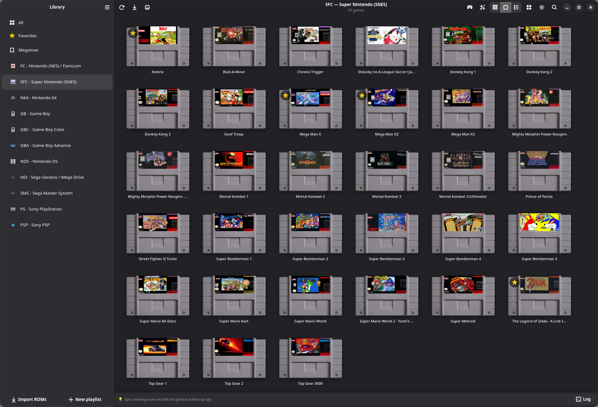
Die Seitenleiste
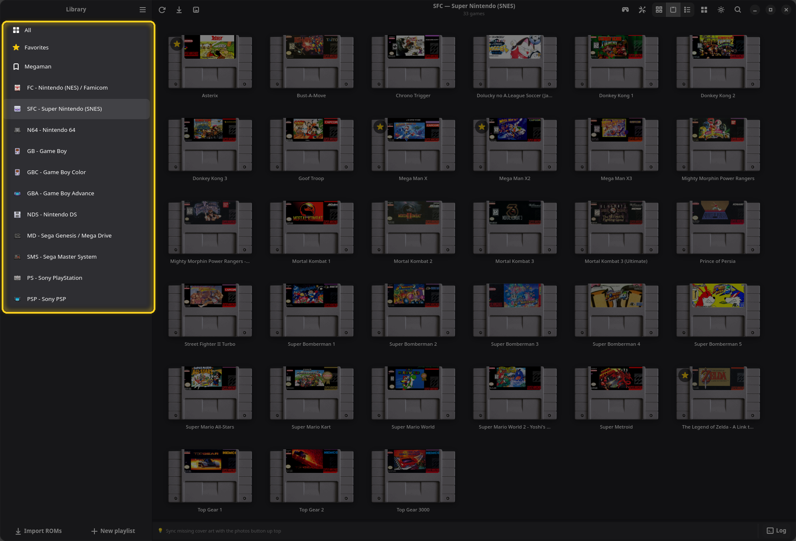
Die Seitenleiste listet die Seiten deiner Bibliothek, von oben nach unten:
- Alle: jedes Spiel, nach Konsole gruppiert.
- Favoriten: die Spiele, die du mit einem Stern markiert hast. Die Zeile erscheint erst, wenn etwas markiert ist. Siehe Favoriten.
- Deine Playlists, falls du welche angelegt hast. Hier Megaman. Siehe Playlists.
- Eine Zeile pro Konsole mit Spielen, mit ihrer Kurz-ID und ihrem Namen, etwa SFC - Super Nintendo (SNES).
Konsolen- und Playlist-Zeilen haben ein Menü: Rechtsklick darauf, oder mit der Maus darüberfahren und auf die Schaltfläche ⋮ klicken. Konsolenzeilen lassen sich auch ziehen, um ihre Reihenfolge zu ändern.
Die Schaltflächen in der Kopfleiste
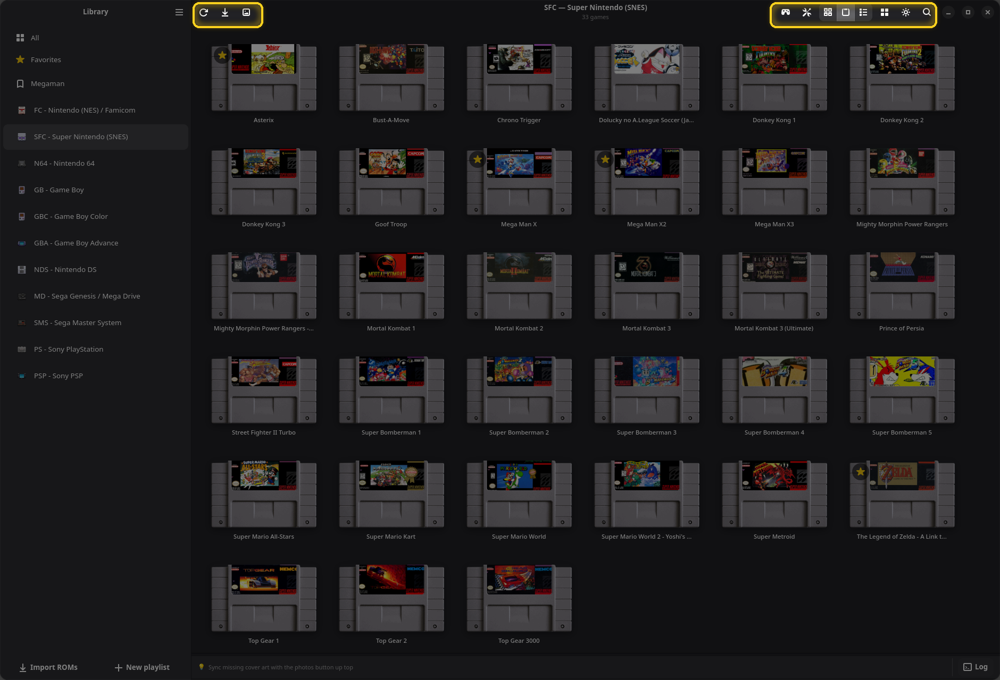
| Schaltfläche | Was sie macht |
|---|---|
| ☰ Hauptmenü (neben „Bibliothek“) | Einstellungen, Tastenkürzel, Willkommen, Fehler melden … und Über OpenEmux. |
| ⟳ Angezeigte Seite neu laden | Liest die angezeigte Konsole neu ein, oder alle Konsolen auf Alle. Wie F5. |
| ⤓ ROMs importieren | Öffnet die Dateiauswahl, um Spiele hinzuzufügen. Siehe Spiele importieren. |
| 🖼 Cover synchronisieren | Lädt fehlende Cover herunter. Siehe Cover synchronisieren. |
| 🎮 Controller-Einstellungen dieser Konsole | Öffnet die Einstellungen auf der Seite Eingabe. Nur auf der Seite einer Konsole sichtbar. |
| 🛠 Einstellungen | Öffnet die Einstellungen. Wie Ctrl+,. |
| Drei verbundene Schaltflächen | Cover-Raster, Modul-Raster und Kompakte Liste. Siehe Ansichten. |
| ▦ Ansichtsmodus | Das Layout-Menü: Ansicht, Sortierung, Filter und Größe der Vorschaubilder für diese Seite. |
| ☀ / ☾ | Wechselt zwischen dunklem und hellem Design. |
| 🔍 Suchen | Filtert die angezeigte Seite. Siehe Suche. |
Der untere Fensterrand
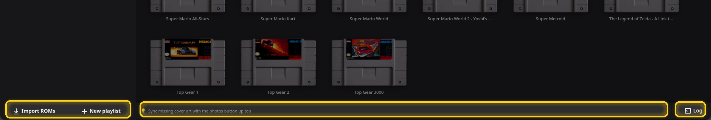
- ROMs importieren und Neue Playlist sitzen unten in der Seitenleiste.
- Die Tippleiste zeigt einen kurzen Tipp, der alle paar Sekunden wechselt. Wenn du dich mit der Tastatur oder einem Controller bewegst, zeigt sie auch, welche Taste was macht.
- Protokoll öffnet den Protokollbereich. Eine rote Zahl darauf zählt die Fehler. Siehe Wenn etwas schiefgeht.
Eine Spielkarte
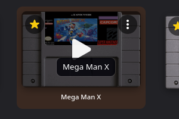
Zeigst du auf ein Spiel, erscheinen drei Bedienelemente:
- der Stern oben links markiert es als Favorit;
- das ⋮ oben rechts öffnet das Menü des Spiels;
- die Play-Schaltfläche in der Mitte startet es. Ein einfacher Klick irgendwo auf die Karte macht dasselbe.
Ein Rechtsklick auf eine Karte öffnet ebenfalls ihr Menü.
Das Hauptmenü und die Tastenkürzel
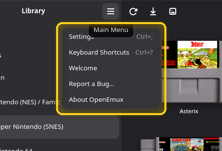
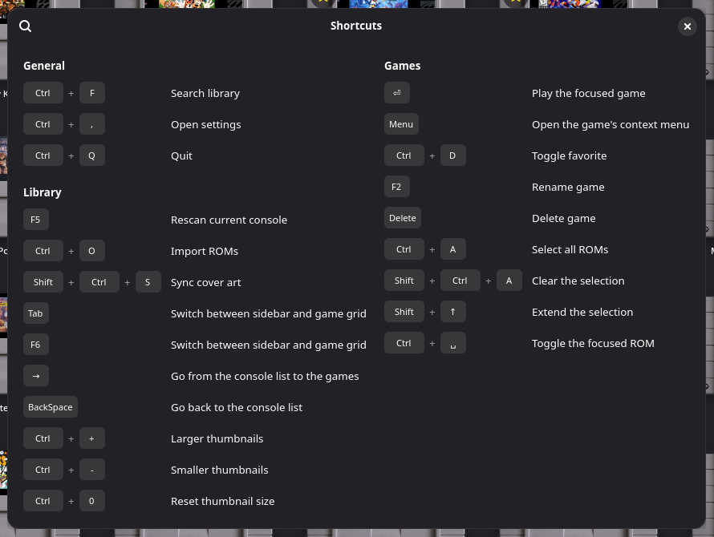
Tastenkürzel (Ctrl+?) listet die Tasten der Bibliothek. Du findest sie auch unter Tastenkürzel und Hotkeys.
Die Willkommenstour
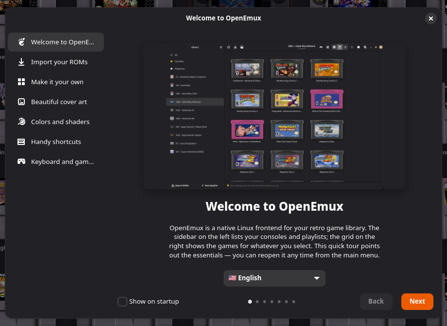
Beim ersten Öffnen von OpenEmux zeigt eine kurze Tour die wichtigsten Funktionen: Importieren, Layouts, Cover, Farben und Shader, Tastenkürzel sowie Tastatur und Controller. Auf ihrer ersten Seite kannst du die Sprache der Oberfläche wählen. Entferne den Haken bei Beim Start anzeigen, damit sie nicht mehr von selbst aufgeht; sie bleibt im Hauptmenü unter Willkommen erreichbar.
OpenEmux installieren
Jede Version liegt auf der Releases-Seite. Nimm das Format, das zu deinem System passt; alle starten dieselbe App.
AppImage (jede Linux-Distribution)
Eine einzige Datei, die auf den meisten Distributionen läuft, ohne etwas zu installieren:
chmod +x OpenEmux-x86_64.AppImage
./OpenEmux-x86_64.AppImageHat dein System kein FUSE, starte sie mit APPIMAGE_EXTRACT_AND_RUN=1 vor dem Befehl.
Debian / Ubuntu (.deb)
sudo apt install ./openemux_*_amd64.debBraucht Ubuntu 24.04 LTS oder neuer, oder ein gleich altes Debian.
Fedora (.rpm)
sudo dnf install ./openemux-*.x86_64.rpmBraucht Fedora 40 oder neuer.
Flatpak
In einer Sandbox, und zusammen mit deinen anderen Flatpaks aktualisiert:
flatpak install -y flathub org.libretro.RetroArch
flatpak remote-add --if-not-exists --no-gpg-verify \
openemux https://guilhermefeitosa66.github.io/openemux-flatpak/repo
flatpak install -y openemux io.github.guilhermefeitosa66.OpenEmuxUpdates kommen dann mit flatpak update. Ein .flatpak-Paket als einzelne Datei liegt ebenfalls auf der Releases-Seite.
Windows (Beta)
Beide Windows-Versionen bringen GTK 4, die Python-Laufzeit und RetroArch selbst mit, du musst also nichts weiter installieren. Sie brauchen Windows 10 oder 11, 64 Bit.
- Installer,
OpenEmux-*-setup.exe: installiert nur für deinen Benutzer und fragt daher nicht nach Administratorrechten. Die Versionen sind noch nicht signiert, deshalb warnt SmartScreen davor; mit Weitere Informationen → Trotzdem ausführen kommst du daran vorbei. - Portabel,
OpenEmux-*-windows-x86_64.zip: irgendwo entpacken undOpenEmux.exeim darin enthaltenen OrdnerOpenEmux\starten. Praktisch auf einem USB-Stick oder einem Rechner, auf dem du keine Software installieren kannst.
Die Windows-Version ist neu. Wenn etwas nicht richtig läuft, eröffne bitte ein Issue.
Einen Download prüfen
Jede Version hat eine Datei SHA256SUMS. Leg sie neben das, was du heruntergeladen hast, und führe aus:
sha256sum -c SHA256SUMS --ignore-missingOK heißt, die Datei ist genau die veröffentlichte. Alles andere heißt, sie ist beschädigt oder wurde verändert; starte sie dann nicht. Unter Windows gibt PowerShell die Prüfsumme aus, und du vergleichst sie mit der passenden Zeile in SHA256SUMS:
Get-FileHash .\OpenEmux-*-setup.exe -Algorithm SHA256Der erste Start
Beim ersten Start zeigt OpenEmux ein Fenster Ersteinrichtung wird vorbereitet, während es seine Konfiguration anlegt, die Ordner für ROMs, BIOS und Cover erstellt, Eingabeprofile und Playlists vorbereitet und die libretro-Kerne herunterlädt, die deine Konsolen brauchen. Das dauert meist etwa zehn Sekunden; die übrigen Kerne werden im Hintergrund weiter geladen, während du die App benutzt, und ein Banner unter der Kopfleiste zeigt den Fortschritt.
Deine Einstellungen liegen in ~/.openemux/ und deine Spiele in ~/games/roms/, ein Ordner pro Konsole.
Aus dem Quellcode bauen
make bootstrap && make runDie Einzelheiten stehen in der Bauanleitung.
Spiele importieren
OpenEmux spielt die ROM-Dateien, die du schon hast. Beim Importieren werden sie in den ROM-Ordner kopiert (oder verknüpft), ein Unterordner pro Konsole, und in die Bibliothek aufgenommen.
ROMs importieren
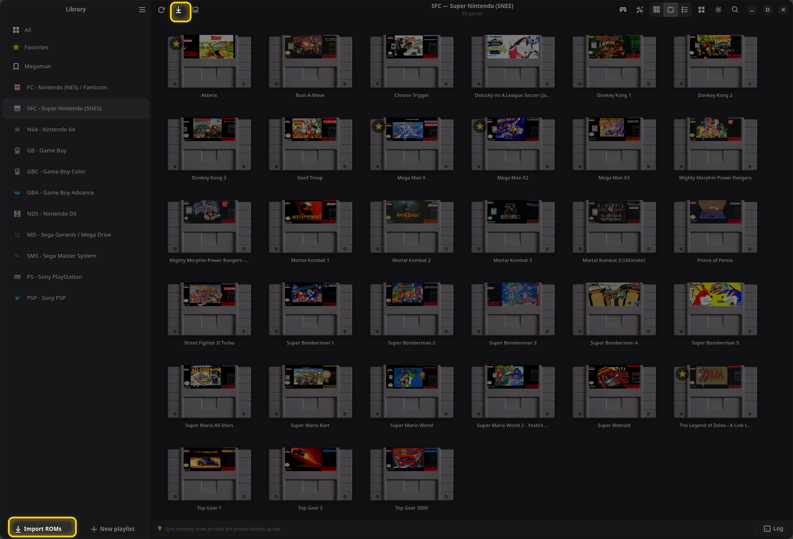
Klicke unten in der Seitenleiste auf ROMs importieren oder in der Kopfleiste auf die Schaltfläche ⤓, oder drücke Ctrl+O. Eine Dateiauswahl öffnet sich; du kannst mehrere Dateien auf einmal wählen.
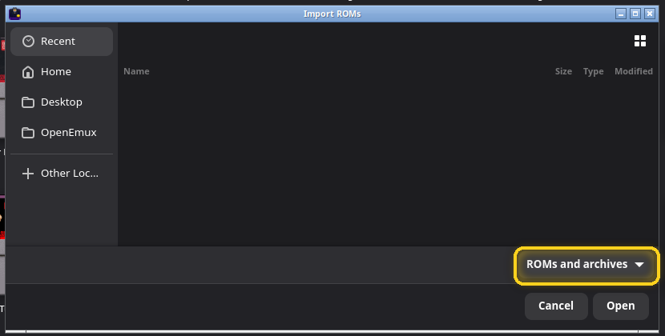
Der Filter ROMs und Archive zeigt nur die Dateien, die OpenEmux importieren kann, auch .zip-Archive. Nach dem Import sagt eine Meldung, wie viele Spiele hinzugekommen sind und wie viele Dateien übersprungen wurden, und OpenEmux sucht Cover für die neuen Spiele.
Ziehen und Ablegen
Du kannst Dateien oder ganze Ordner auch irgendwo im Fenster ablegen. Während du ziehst, zeigt ein Banner Dateien hier ablegen, um sie zu importieren. Ordner werden bis ganz nach unten durchsucht.
Welche Konsole?
OpenEmux erkennt die Konsole an der Dateiendung (.sfc ist ein Super-Nintendo-Spiel, .gba ein Game-Boy-Advance-Spiel und so weiter). Dabei können zwei Dialoge auftauchen:
- Importierst du aus Alle, Favoriten oder einer leeren Bibliothek, fragt es zuerst Welche Konsole?, mit Automatisch erkennen ausgewählt. Lass das so, außer du willst alle Dateien einer bestimmten Konsole zuordnen.
- Teilen sich mehrere Konsolen eine Endung, etwa
.binoder.iso, fragt es einmal pro Endung, mit einer Schaltfläche pro möglicher Konsole. Die wahrscheinlichste steht vorne.
Der ROM-Ordner
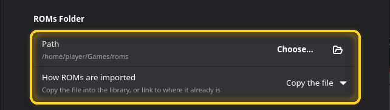
In Einstellungen → Bibliothek:
- Pfad ist der Ort der Bibliothek. Wählen… stellt einen anderen Ordner ein; das Ordnersymbol öffnet ihn in deinem Dateimanager.
- Wie ROMs importiert werden wählt zwischen Datei kopieren (Standard: das Original bleibt, wo es war, und die Bibliothek bekommt eine eigene Kopie) und Auf das Original verweisen (keine Kopie; die Bibliothek zeigt auf den Ort der Datei, wenn du das Original verschiebst oder löschst, funktioniert das Spiel also nicht mehr).
Du kannst Dateien auch selbst in die Konsolenordner legen, zum Beispiel ~/games/roms/SFC/, und neu einlesen.
Neu einlesen
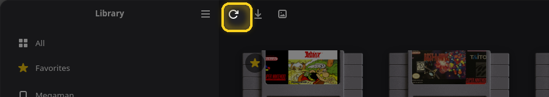
Die Bibliothek wird bei jedem Start von OpenEmux eingelesen. Um Änderungen von außerhalb der App zu übernehmen, nimm ⟳ in der Kopfleiste (F5), Diese Konsole neu einlesen im Menü einer Konsole oder ROMs einlesen in Einstellungen → Bibliothek, wo du eine Konsole oder alle wählen kannst.
Cover synchronisieren
OpenEmux lädt zwei Arten von Bildern herunter: Cover (die Hülle) und Aufkleber (das Bild auf dem Modul, das die Modulansicht benutzt). Es holt nur, was fehlt; Bilder, die du schon hast, bleiben unangetastet.
Cover synchronisieren
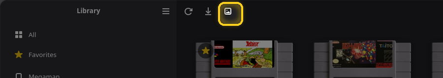
Klicke in der Kopfleiste auf 🖼 Cover synchronisieren oder drücke Ctrl+Shift+S. Auf der Seite einer Konsole synchronisiert es diese Konsole, überall sonst die ganze Bibliothek. Ein Banner unter der Kopfleiste zeigt den Fortschritt, mit einer Schaltfläche Abbrechen, und die Cover erscheinen, sobald sie ankommen.
Dieselbe Aktion gibt es im Menü einer Konsole (Cover synchronisieren), in der Leiste, die bei mehreren ausgewählten Spielen erscheint, und in Einstellungen → Bibliothek → Wartung, wo du zuerst die Konsole wählst.
Woher die Cover kommen
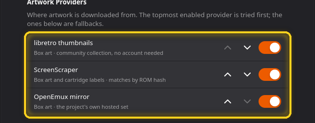
Drei Quellen werden der Reihe nach versucht, die oberste zuerst; die darunter sind Ausweichoptionen. Jede Zeile hat Pfeile, um sie nach oben oder unten zu schieben, und einen Schalter, um sie abzuschalten.
- libretro-Vorschaubilder: Cover aus der Community-Sammlung. Kein Konto nötig.
- ScreenScraper: Cover und Modul-Aufkleber, zugeordnet über die Prüfsumme der ROM, findet Spiele also auch bei ungewöhnlichen Dateinamen.
- OpenEmux-Spiegel: Cover aus der eigenen Sammlung des Projekts.
ScreenScraper-Konto
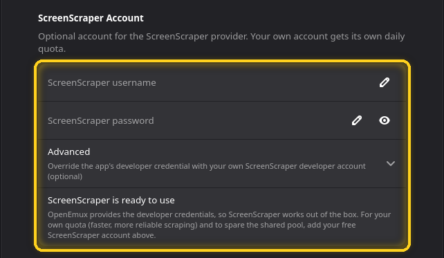
ScreenScraper funktioniert ohne Konto: OpenEmux bringt Entwickler-Zugangsdaten und ein gemeinsames Kontingent mit. Ein eigenes, kostenloses ScreenScraper-Konto hat ein eigenes Tageskontingent, das ist bei großen Bibliotheken schneller und zuverlässiger. Fülle ScreenScraper-Benutzername und ScreenScraper-Passwort aus. Unter Erweitert stehen eine Entwickler-ID und ein Passwort, die brauchst du nur mit einem eigenen Entwicklerkonto.
Cover verwalten
Spiele ohne Cover
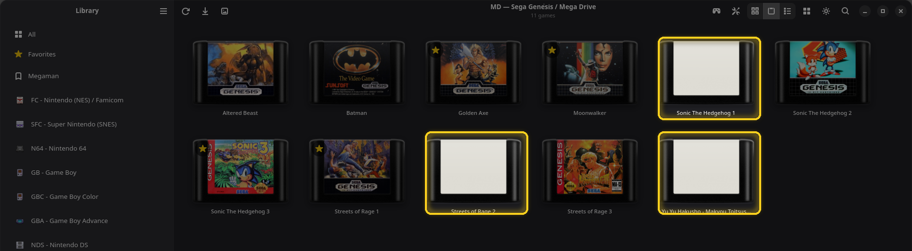
Wurde kein Aufkleber gefunden, zeigt das Modul einen leeren Aufkleber; wurde kein Cover gefunden, zeigt die Cover-Ansicht auf der leeren Karte eine Schaltfläche Cover suchen…. Um nur diese Spiele aufzulisten, schalte Nur ohne Cover im Layout-Menü ein.
Die Cover-Einträge eines Spiels
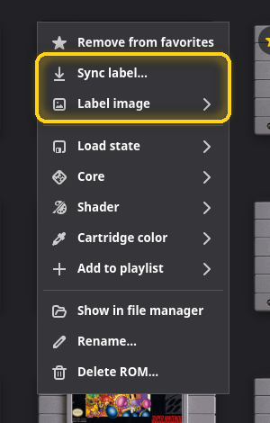
Klicke mit der rechten Maustaste auf ein Spiel oder auf sein ⋮. Die Cover-Einträge wirken in der Modulansicht auf den Aufkleber und überall sonst auf das Cover, und ihre Namen passen sich an:
- Aufkleber synchronisieren… / Cover synchronisieren… holt die Bilder dieses Spiels sofort. Anders als die Synchronisierung der Bibliothek ersetzt es die Bilder, die das Spiel schon hat.
- Aufkleberbild ▸ / Coverbild ▸ enthält die anderen drei.
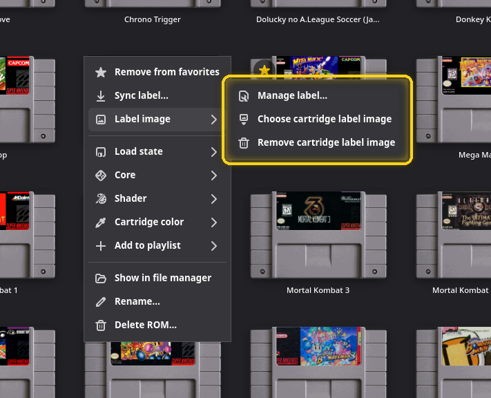
- Aufkleber verwalten… öffnet die Cover-Verwaltung, siehe unten.
- Bild des Modul-Aufklebers wählen nimmt eine Bilddatei von deinem Computer, so wie sie ist.
- Bild des Modul-Aufklebers entfernen löscht das aktuelle Bild des Spiels. Erscheint nur, wenn es etwas zu entfernen gibt.
Die Cover-Verwaltung
Die Verwaltung öffnest du über Cover verwalten… / Aufkleber verwalten… oder über die Schaltfläche Cover suchen… auf einer leeren Karte. Sie hat drei Tabs.
Cover und Aufkleber
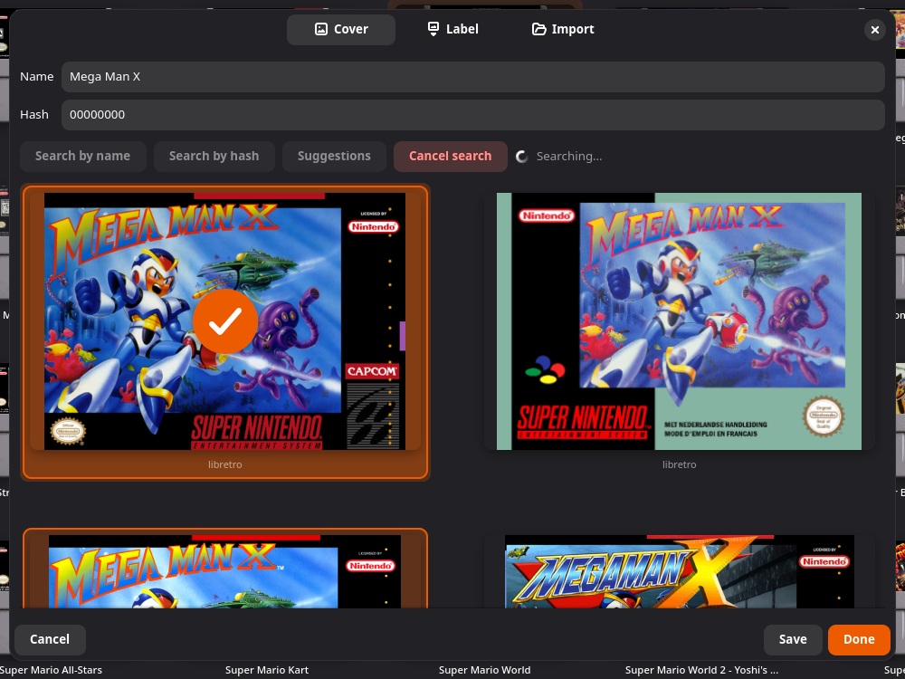
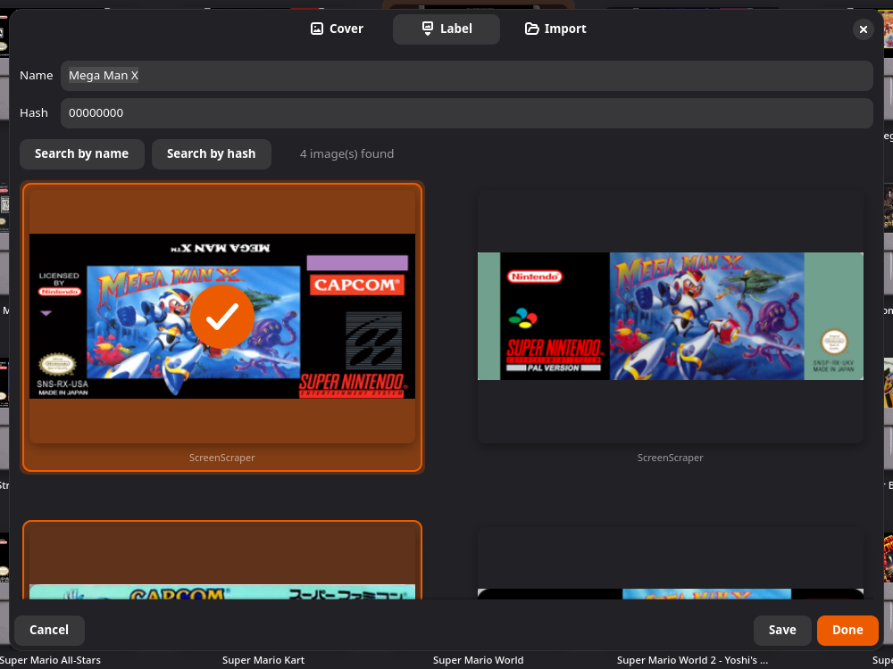
- Name ist der Titel, nach dem gesucht wird. Ändere ihn, wenn der Dateiname nicht der echte Name des Spiels ist.
- Prüfsumme ist der Fingerabdruck der Datei, schon für dich berechnet.
- Nach Name suchen und Nach Prüfsumme suchen fragen die Quellen ab. Die Suche nach Prüfsumme ist exakt; die Suche nach Name ist großzügiger.
- Vorschläge (Tab Cover) schlägt ähnliche Titel aus der Spielnamen-Datenbank vor, sortiert nach Ähnlichkeit, wenn der Name so wie geschrieben nichts findet.
Klicke auf ein Ergebnis, um es zu wählen; es bekommt ein Häkchen. Speichern übernimmt es und lässt das Fenster offen; Fertig übernimmt es und schließt; Abbrechen schließt, ohne etwas zu ändern. Den Tab Aufkleber gibt es nur bei Konsolen mit Modulansicht.
Importieren
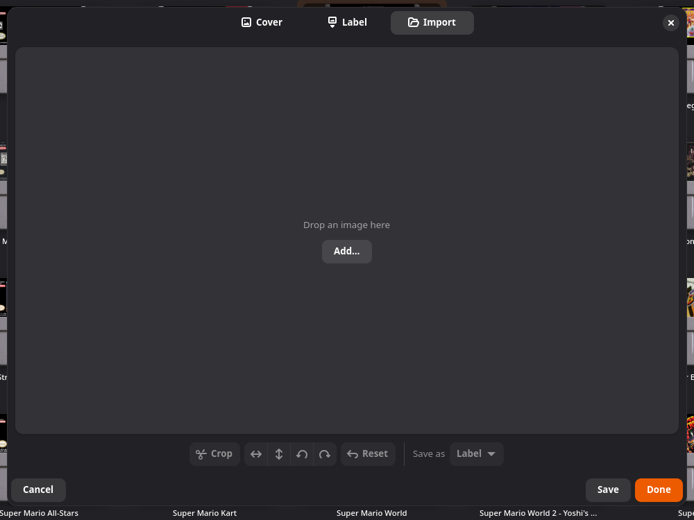
Zieh ein Bild auf den Tab oder klicke auf Hinzufügen…, um eins zu wählen. Dann kannst du es Zuschneiden, spiegeln, drehen oder deine Änderungen mit Zurücksetzen verwerfen, und unter Speichern als wählen, ob es Cover oder Aufkleber wird.
Modulfarben
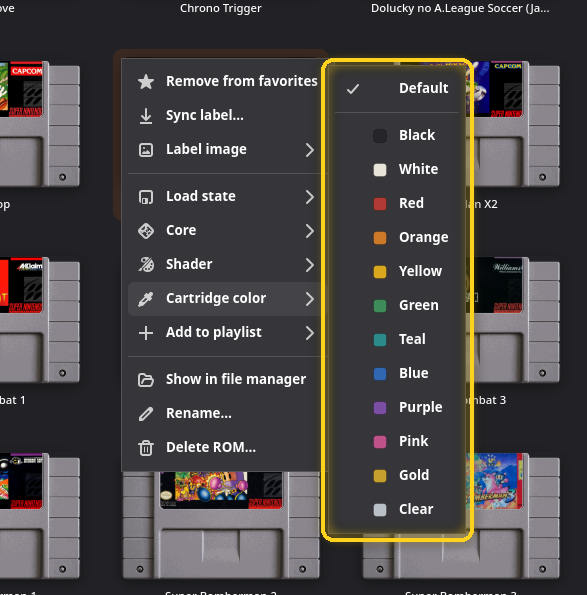
In der Modulansicht färbt Modulfarbe ▸ das Gehäuse des Moduls eines Spiels: Standard oder Schwarz, Weiß, Rot, Orange, Gelb, Grün, Blaugrün, Blau, Violett, Rosa, Gold oder Transparent. Praktisch für Spiele, die auf einem farbigen Modul erschienen sind, wie das rote Pokémon Feuerrot.
Ansichten
Cover, Modul und Liste
Die drei verbundenen Schaltflächen in der Kopfleiste legen fest, wie die Seite ihre Spiele zeigt.
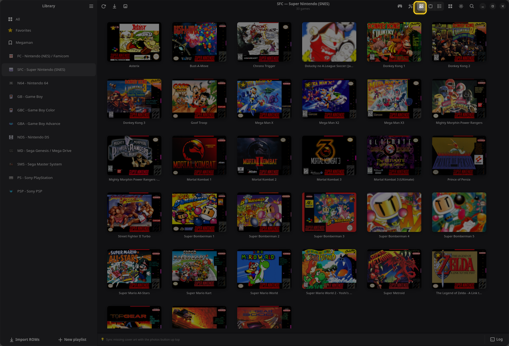
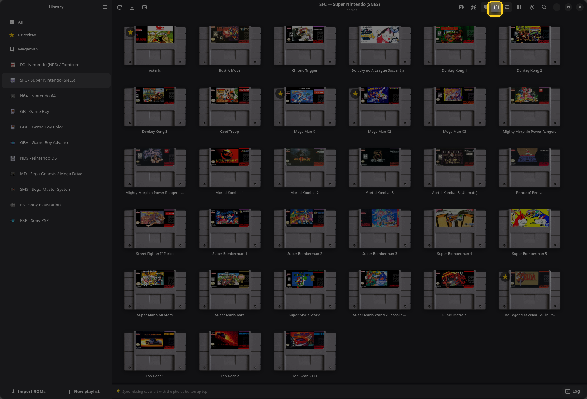
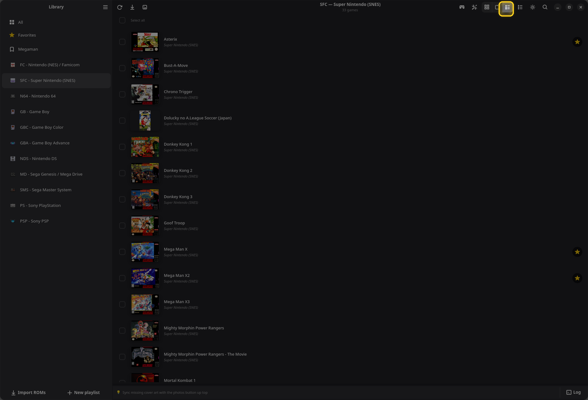
Das Layout-Menü
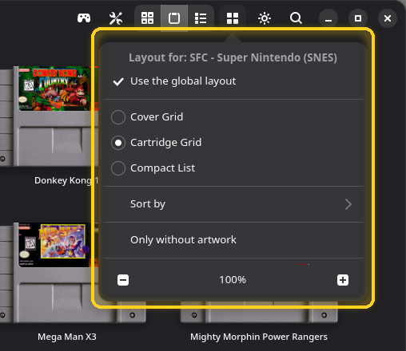
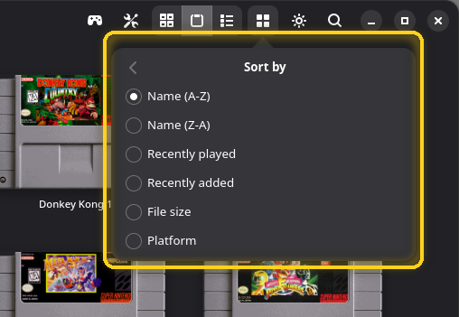
Die Schaltfläche ▦ Ansichtsmodus öffnet das Layout der angezeigten Seite:
- Globales Layout verwenden: mit Haken folgt diese Seite dem gemeinsamen Layout aller Seiten ohne eigenes Layout. Änderst du ohne Haken etwas darunter, behält die Seite ihr eigenes Layout.
- Die drei Ansichten.
- Sortieren nach: Name (A-Z), Name (Z-A), Zuletzt gespielt, Zuletzt hinzugefügt, Dateigröße und, auf Seiten mit mehreren Konsolen, Plattform.
- Nur ohne Cover: zeigt nur die Spiele, denen noch Bilder fehlen. Gilt, bis du OpenEmux schließt.
- Die Schaltflächen − / + stellen die Größe der Vorschaubilder ein, von 50 % bis 200 %. Ctrl++, Ctrl+− und Ctrl+0 machen dasselbe.
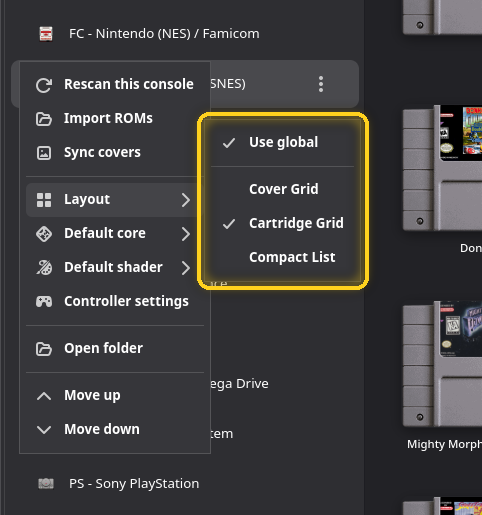
Das Menü einer Konsole in der Seitenleiste bietet dieselbe Wahl unter Layout ▸, so kann jede Konsole ihre eigene Ansicht behalten. Playlists haben das auch.
„Alle“ und gruppierte Seiten
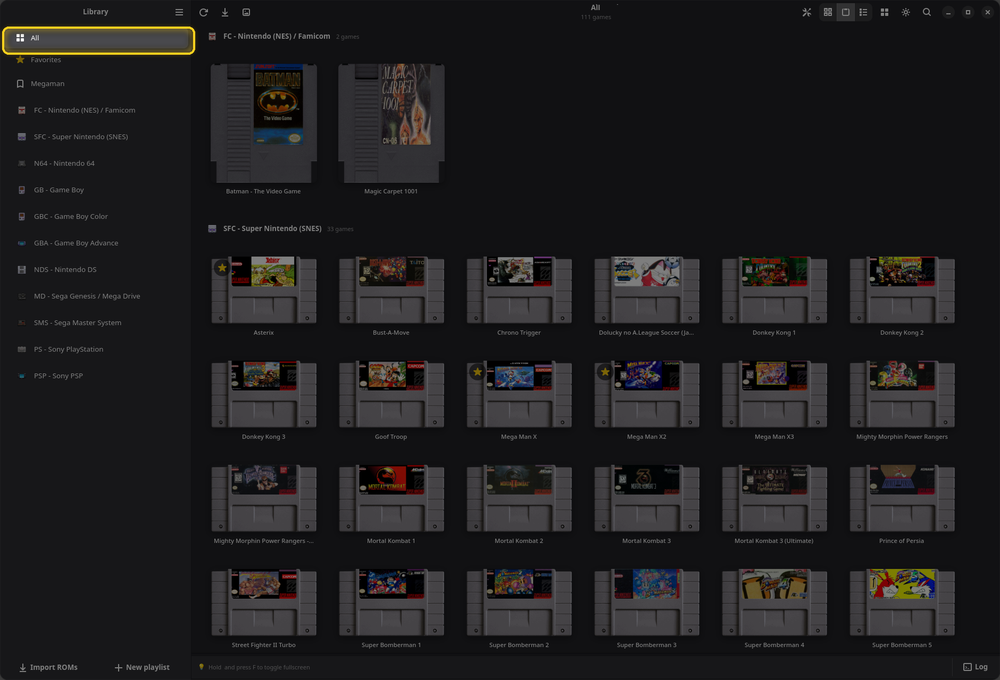
Alle, Favoriten und Playlists mischen Konsolen, deshalb sind sie gruppiert: Jede Gruppe hat eine Überschrift mit Symbol, Name und Anzahl der Spiele der Konsole. Die Gruppen folgen der Reihenfolge der Konsolen, die du in der Seitenleiste oder in Einstellungen → Bibliothek festlegst.
Suche
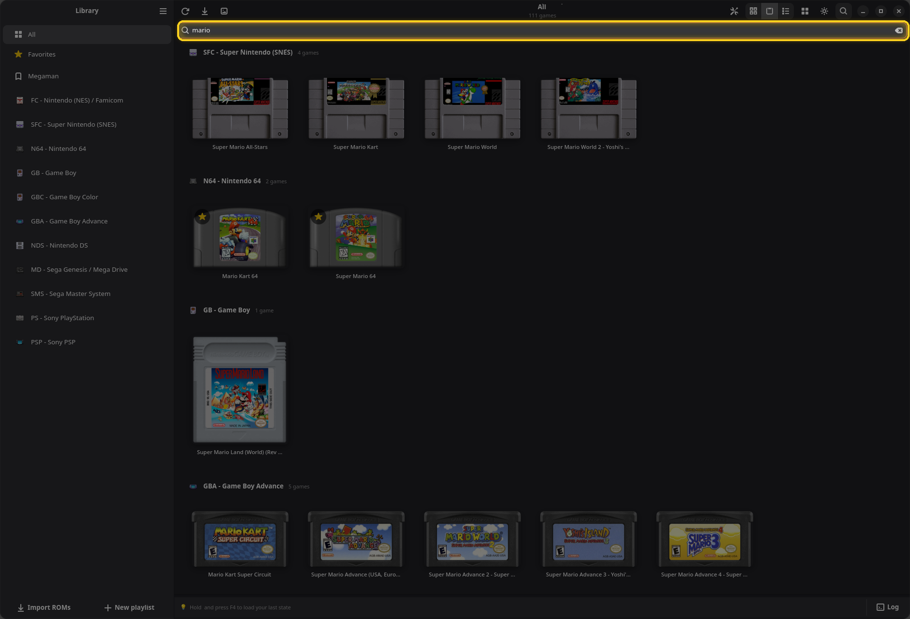
Klicke auf 🔍, drücke Ctrl+F oder fang einfach an zu tippen. Die Suche filtert die angezeigte Seite, such also von Alle aus, um die ganze Bibliothek zu durchsuchen. Esc schließt sie.
Mehrere Spiele auswählen
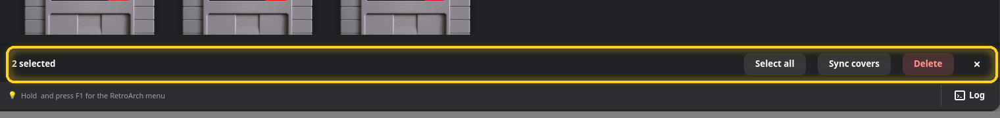
Ein einfacher Klick startet ein Spiel, deshalb wählst du mit Zusatztasten aus: Ctrl-Klick fügt ein Spiel hinzu, Shift-Klick einen Bereich, Ziehen auf einer leeren Fläche zieht ein Auswahlrechteck auf, und Ctrl+A wählt die ganze Seite. In der Listenansicht nimmst du die Kontrollkästchen. Unten erscheint eine Leiste mit Alle auswählen, Cover synchronisieren und Löschen; Zur Playlist hinzufügen im Spielmenü wirkt dann auf die ganze Auswahl. Klicke auf eine leere Fläche oder auf ×, um sie aufzuheben.
Playlists
Eine Playlist ist eine Liste von Spielen, die du selbst zusammenstellst, von beliebigen Konsolen: eine Spielereihe, die Spiele, die du mit Freunden spielst, die, die du gerade durchspielst. Ein Spiel zu einer Playlist hinzuzufügen kopiert oder verschiebt es nicht.
Eine Playlist erstellen
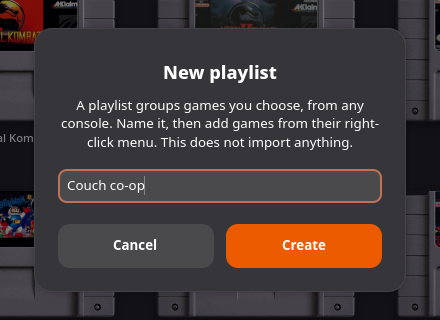
Klicke unten in der Seitenleiste auf Neue Playlist (oder mit der rechten Maustaste auf eine leere Stelle der Seitenleiste), gib einen Namen ein und klicke auf Erstellen. Die Playlist erscheint in der Seitenleiste, zwischen Favoriten und den Konsolen.
Spiele hinzufügen und entfernen
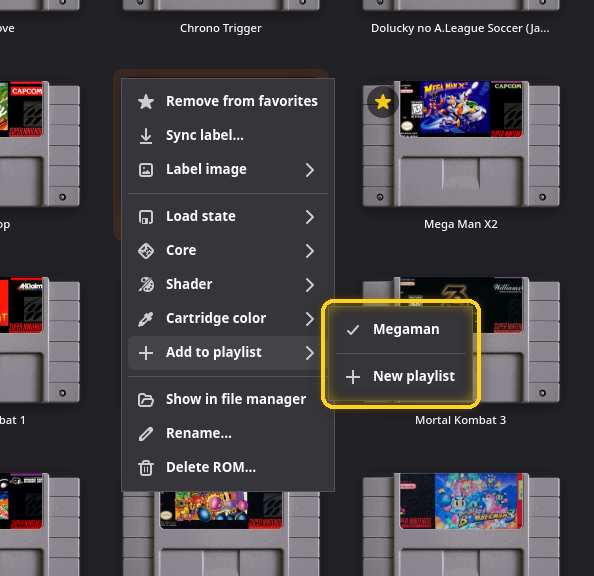
Im Menü eines Spiels listet Zur Playlist hinzufügen ▸ deine Playlists. Ein Häkchen heißt, das Spiel ist schon drin, und ein Klick auf eine abgehakte Playlist nimmt es wieder heraus. Neue Playlist ganz unten erstellt eine, in der dieses Spiel schon drin ist. Sind mehrere Spiele ausgewählt, kommen alle auf einmal hinein.
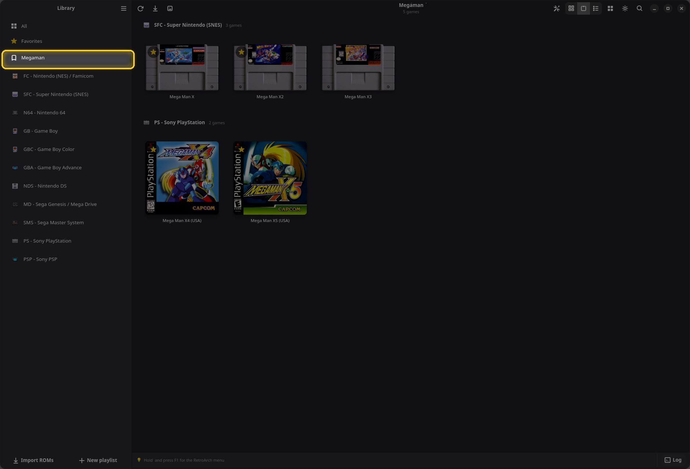
In einer Playlist sind die Spiele nach Konsole gruppiert, und das Spielmenü hat einen zusätzlichen Eintrag, Aus dieser Playlist entfernen.
Umbenennen und löschen
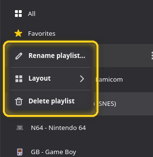
Klicke mit der rechten Maustaste auf die Playlist in der Seitenleiste oder auf ihr ⋮: Playlist umbenennen…, Layout ▸ und Playlist löschen. Eine Playlist zu löschen löscht nie ihre Spiele.
Favoriten
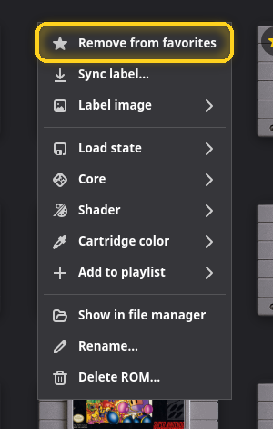
Um ein Spiel mit einem Stern zu markieren, klicke auf den Stern auf seiner Karte, wähle Zu Favoriten hinzufügen in seinem Menü oder drücke Ctrl+D (Ⓨ am Controller). Dieselben Handgriffe nehmen den Stern wieder weg.
Ein markiertes Spiel behält sein Stern-Abzeichen auf jeder Seite.
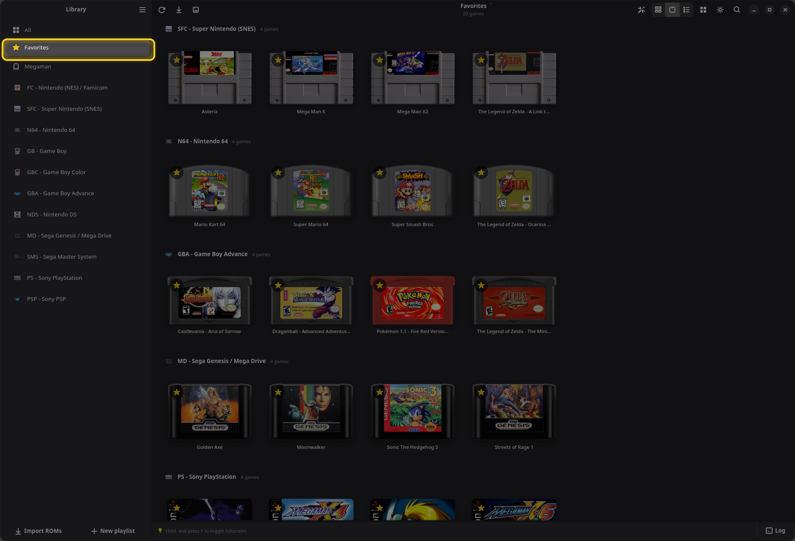
Die Seite Favoriten sammelt sie, nach Konsole gruppiert. Ihre Zeile erscheint in der Seitenleiste, sobald du ein Spiel markiert hast, und OpenEmux öffnet auf ihr, wenn es sonst nichts gibt, wohin es zurückkehren kann.
Kerne und Shader
Ein Kern ist der Emulator, den RetroArch für eine Konsole ausführt: Für das Super Nintendo gibt es Snes9x, bsnes, Mesen-S und andere. Jede Konsole startet mit einer sinnvollen Voreinstellung, angezeigt als Automatisch (…). Ein Shader ändert, wie das Bild gezeichnet wird: Ein CRT-Shader bringt die Scanlines und die Wölbung eines alten Fernsehers zurück, und Disabled zeigt die rohen Pixel.
Beides lässt sich für eine ganze Konsole einstellen und zusätzlich für ein einzelnes Spiel.
Für ein Spiel
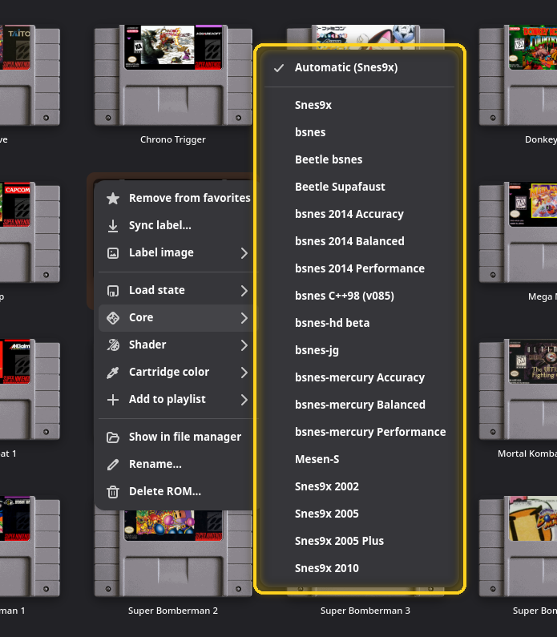
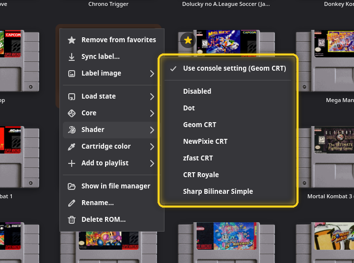
- Kern ▸ listet jeden installierten Kern der Konsole. Der erste Eintrag, Automatisch (…), folgt der Einstellung der Konsole. Braucht der gewählte Kern BIOS-Dateien, die du nicht hast, sagt OpenEmux dir, welche.
- Shader ▸ beginnt mit Konsolen-Einstellung verwenden (…), dann Disabled, Dot, Geom CRT, NewPixie CRT, zfast CRT, CRT Royale und Sharp Bilinear Simple. Schalte Alle Shader anzeigen in Einstellungen → Video ein, um jeden Shader von RetroArch aufzulisten.
Für eine ganze Konsole
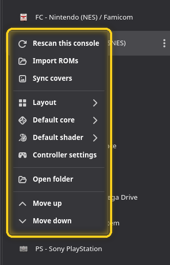
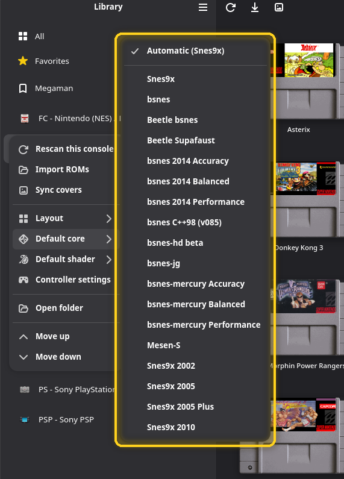
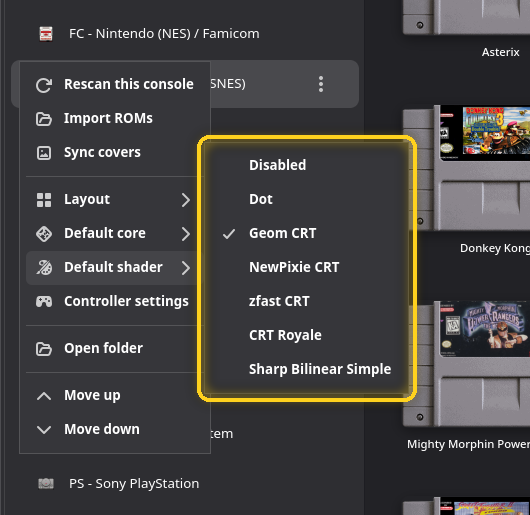
Klicke mit der rechten Maustaste auf eine Konsole in der Seitenleiste. Standardkern ▸ und Standard-Shader ▸ legen fest, was jedes Spiel dieser Konsole benutzt, außer das Spiel hat eine eigene Wahl. Es sind dieselben Einstellungen wie in Einstellungen → Kerne und Einstellungen → Video → Shader pro Konsole. Ab Werk nutzen Handhelds (Game Boy, Game Boy Color, Game Boy Advance, DS) Dot und alle anderen Geom CRT.
Alle Kontextmenüs
Das Menü eines Spiels
| Eintrag | Was er macht |
|---|---|
| Zu Favoriten hinzufügen / Aus Favoriten entfernen | Markiert das Spiel mit einem Stern oder nimmt ihn weg. |
| Cover synchronisieren… / Aufkleber synchronisieren… | Lädt die Bilder dieses Spiels neu herunter und ersetzt die aktuellen. |
| Coverbild ▸ / Aufkleberbild ▸ | Verwalten…, eine Bilddatei wählen oder das aktuelle Bild entfernen. |
| Spielstand laden ▸ | Startet das Spiel aus einem seiner zehn Speicherplätze, jeder mit seinem Datum. Leere Plätze sind ausgegraut. |
| Kern ▸ | Der Kern nur für dieses Spiel. |
| Shader ▸ | Der Shader nur für dieses Spiel. |
| Modulfarbe ▸ | Die Farbe des Gehäuses in der Modulansicht. |
| Zur Playlist hinzufügen ▸ | Legt das Spiel in eine Playlist oder nimmt es heraus. |
| Aus dieser Playlist entfernen | Nur innerhalb einer Playlist. |
| Im Dateimanager anzeigen | Öffnet den Ordner mit ausgewählter ROM-Datei. |
| Umbenennen… | Benennt das Spiel und seine Datei um, die Endung bleibt. F2. |
| ROM löschen… | Verschiebt die Datei nach einer Rückfrage in den Papierkorb. Delete. |
Das Menü einer Konsole
| Eintrag | Was er macht |
|---|---|
| Diese Konsole neu einlesen | Liest den Ordner der Konsole neu ein. |
| ROMs importieren | Öffnet die Dateiauswahl zum Importieren. Die Endung entscheidet trotzdem über die Konsole. |
| Cover synchronisieren | Lädt fehlende Bilder für diese Konsole herunter. |
| Layout ▸ | Global verwenden oder eine eigene Ansicht. |
| Standardkern ▸ | Der Kern für die ganze Konsole. |
| Standard-Shader ▸ | Der Shader für die ganze Konsole. |
| Controller-Einstellungen | Öffnet Einstellungen → Eingabe mit dieser Konsole ausgewählt. |
| Ordner öffnen | Öffnet den Ordner der Konsole im Dateimanager. |
| Nach oben / Nach unten | Ändert den Platz der Konsole in der Seitenleiste. Ctrl+↑ / ↓, oder die Zeile ziehen. |
Einstellungen
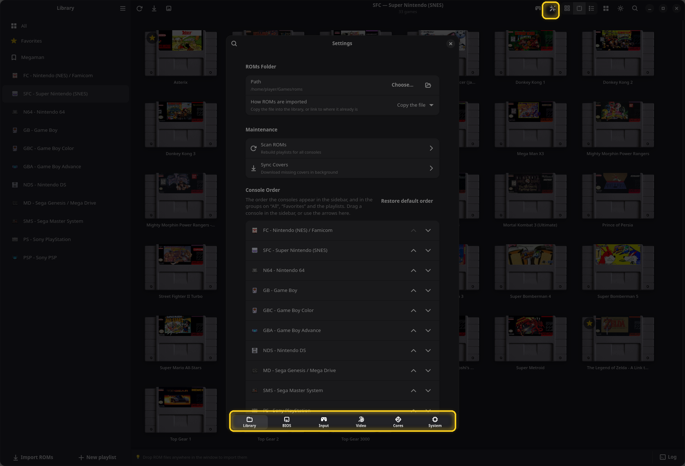
Öffne die Einstellungen mit der Schaltfläche 🛠 in der Kopfleiste, über das Hauptmenü oder mit Ctrl+,. Die Seiten liegen am unteren Rand: Bibliothek, BIOS, Eingabe, Video, Kerne und System. Die 🔍 oben links durchsucht alle Seiten. Änderungen gelten sofort; speichern musst du nichts, außer im Steuerungseditor.
Bibliothek
ROM-Ordner
Wo die Bibliothek liegt und ob beim Import Dateien kopiert oder verknüpft werden. Siehe Der ROM-Ordner.
Wartung
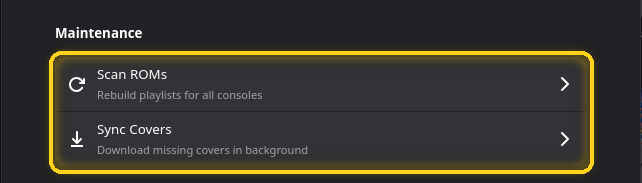
- ROMs einlesen baut die Spielelisten aus den Ordnern neu auf. Ein Dialog fragt nach dem Umfang: alle Konsolen oder eine.
- Cover synchronisieren lädt fehlende Bilder im Hintergrund herunter, für alle Konsolen oder eine.
Reihenfolge der Konsolen
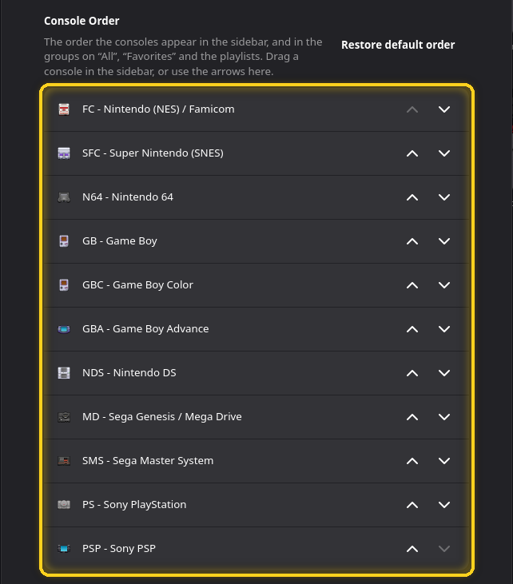
Die Reihenfolge der Konsolen in der Seitenleiste und in den Gruppen von Alle, Favoriten und Playlists. Nimm die Pfeile oder zieh Konsolen in der Seitenleiste. Standardreihenfolge wiederherstellen macht das rückgängig. Eine Konsole, die du einsortiert hast, behält ihren Platz, auch solange sie keine Spiele hat.
Cover-Quellen und ScreenScraper-Konto
Siehe Woher die Cover kommen und ScreenScraper-Konto.
BIOS
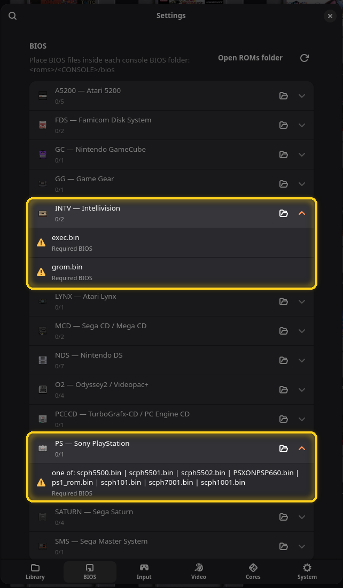
Manche Konsolen brauchen die Firmware des Originalgeräts, das BIOS, um Spiele zu starten. OpenEmux liefert keins mit; du kopierst dein eigenes nach <ROMs folder>/<CONSOLE>/bios, zum Beispiel ~/games/roms/PS/bios/.
- Jede Konsole, die BIOS-Dateien nutzt, hat eine Zeile, die zeigt, wie viele davon vorhanden sind und wie viele sie kennt, etwa 0/1. Die Ordnerschaltfläche öffnet den BIOS-Ordner dieser Konsole.
- Klapp eine Zeile auf, um jede Datei zu sehen, markiert als Erforderliches BIOS oder Optionales BIOS, mit ⚠, solange sie fehlt, und ✓, sobald sie da ist. Eine Zeile mit eines von: ist mit jeder der aufgeführten Dateien erfüllt; die PlayStation zum Beispiel akzeptiert mehrere regionale BIOS-Dateien.
- ⟳ oben prüft erneut, nachdem du Dateien hineinkopiert hast.
Eingabe
Diese Seite bearbeitet die Steuerung jeweils einer Konsole. Ein danach gestartetes Spiel benutzt sie; läuft beim Speichern ein Spiel dieser Konsole, startet es neu und dein Fortschritt bleibt erhalten.
Controller
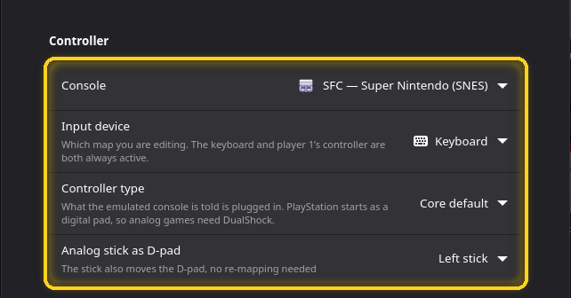
- Konsole: welche Konsole du bearbeitest. Am Anfang ist es die angezeigte Konsole.
- Eingabegerät: Tastatur oder Gamepad Port 1 bis 4. Tastatur und Controller von Spieler 1 funktionieren gleichzeitig. Für die Ports 2 bis 4 schickt ein Schalter Diesen Port aktivieren die Belegung dieses Spielers an RetroArch.
- Controller-Typ: was der emulierten Konsole als angeschlossen gemeldet wird. Eine PlayStation kann zum Beispiel einen DualShock bekommen (nötig für Spiele mit Analogsteuerung), ein Mega Drive ein 6-Tasten-Pad (für Street Fighter II), ein Super Nintendo eine Maus oder einen Multitap. Nur bei Konsolen mit Optionen sichtbar.
- Stick als Steuerkreuz: Der Stick bewegt das Steuerkreuz, ohne etwas neu zu belegen. Die Optionen (erzwungen) wenden das auch an, wenn der Kern es nicht täte.
- Steuerkreuz bewegt auch den Stick: andersherum, für 3D-Konsolen wie das N64 oder die PlayStation.
Stick und Vibration
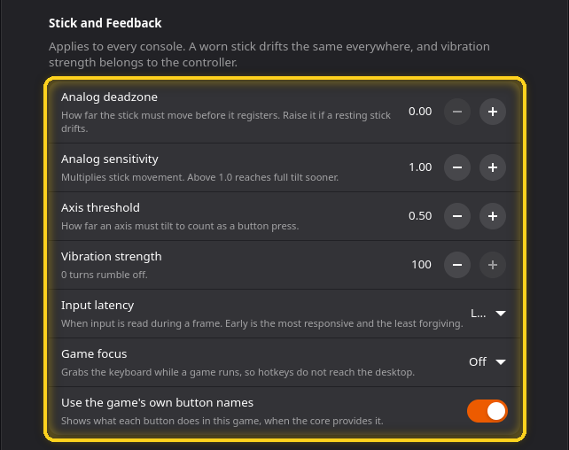
Diese gelten für alle Konsolen.
- Totzone des Sticks: wie weit sich der Stick bewegen muss, bevor es zählt. Erhöhe sie, wenn die Spielfigur wegdriftet, obwohl niemand den Stick berührt.
- Empfindlichkeit des Sticks: verstärkt die Stickbewegung. 1.0 ist normal.
- Achsenschwelle: wie weit ein Stick oder Trigger gehen muss, damit es als Tastendruck zählt.
- Stärke der Vibration: Rumble, von 0 (aus) bis 100.
- Eingabelatenz: wann die Eingabe innerhalb eines Frames gelesen wird. Früh reagiert am schnellsten und verzeiht auf einem langsamen Rechner am wenigsten; Spät ist der Standard.
- Spielfokus: übernimmt die Tastatur, während ein Spiel läuft, damit die Hotkeys von RetroArch keine Tasten wegnehmen, die ein Computerspiel braucht. Aus, beim Schließen des Menüs oder beim Start eines Spiels.
- Tastennamen des Spiels verwenden: zeigt im RetroArch-Menü für jede Taste ihre Aktion im Spiel, wenn der Kern sie liefert.
Turbo
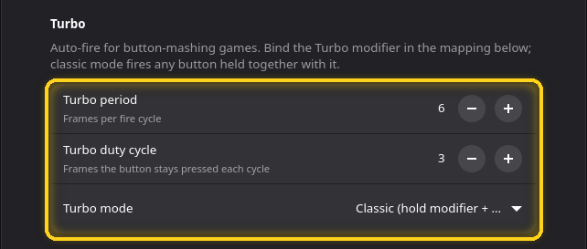
Dauerfeuer für Spiele, bei denen du eine Taste hämmern musst. Belege die Taste Turbo (Modifikator) unten in Spielsteuerung.
- Turbo-Periode: Frames pro Feuerzyklus. Weniger ist schneller.
- Turbo-Tastverhältnis: wie viele Frames die Taste in jedem Zyklus gedrückt bleibt.
- Turbo-Modus: Klassisch feuert jede Taste, die zusammen mit dem Modifikator gehalten wird; Eine Taste (umschalten) und „Eine Taste (halten)“ feuern eine gewählte Taste, umgeschaltet oder gehalten.
Spielsteuerung
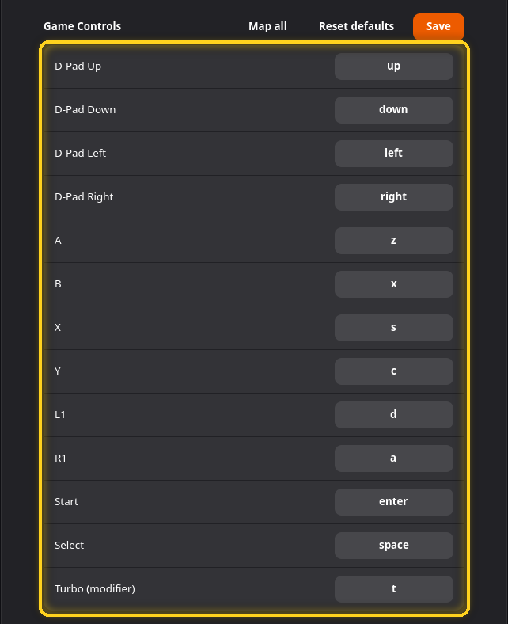
Eine Zeile pro Taste der gewählten Konsole. Klicke auf eine Belegung und drücke die gewünschte Taste; beim Warten steht dort Taste drücken..., und Esc leert sie. War die Taste schon anderswo belegt, gibt OpenEmux sie dort frei und sagt dir Bescheid.
- Alle belegen geht der Reihe nach durch jede Taste.
- Standard wiederherstellen holt die Standardbelegung dieser Konsole zurück.
- Speichern übernimmt deine Änderungen. Denk daran; das ist die einzige Stelle in den Einstellungen, an der du speichern musst.
System-Tastenkürzel
Tasten für RetroArch selbst statt für das Spiel: Menü, Spielstand speichern und laden, Speicherplätze, Lautstärke, Stumm, Vorspulen, Vollbild, Neustart, Zurückspulen, Pause, Zeitlupe, Screenshot, Spielfokus und Diskwechsel. Tastenkürzel aktivieren ist eine Taste, die du gedrückt hältst, damit die anderen funktionieren; auf der Tastatur ist sie standardmäßig leer, die Hotkeys funktionieren dort also allein. Die Standardbelegung steht unter Beim Spielen.
Video
Erscheinungsbild
- Ansichtsmodus und Spiele sortieren nach: das globale Layout. Siehe Das Layout-Menü.
- Alle Shader anzeigen: listet in den Shader-Menüs jeden Shader von RetroArch statt der kurzen Liste.
- Standard wiederherstellen: setzt jede Konsole auf ihren Standard-Shader zurück.
Shader pro Konsole
Eine Zeile pro Konsole mit ihrem Standard-Shader. Dieselbe Einstellung wie Standard-Shader im Menü der Konsole.
Kerne
Kerne pro Konsole
Eine Zeile pro Konsole. Der Untertitel sagt, welchen Kern Automatisch benutzt; öffne die Liste, um einen anderen installierten Kern zu wählen. Dieselbe Einstellung wie Standardkern im Menü der Konsole. Eine Konsole ohne Kern zeigt Für dieses System ist kein Kern installiert, bis der Download im Hintergrund bei ihr ankommt.
Erweitert
Zusätzliche Optionen, die manche Kerne verstehen, nur für Konsolen aufgelistet, deren aktueller Kern sie hat. Bei PSP und PlayStation sind das die interne Auflösung (3D-Spiele über ihrer nativen Auflösung rendern, für ein schärferes Bild, auf Kosten der Geschwindigkeit), die Grafik-API und die Texturfilterung.
System
Sprache
Die Sprache der Oberfläche: English, Deutsch, 日本語, Français, 简体中文, Português (Brasil), Español oder தமிழ். Die Einstellungen öffnen sich in der neuen Sprache neu.
Oberfläche
- Design: System (folgt deinem Desktop), Hell oder Dunkel.
- Tipps anzeigen: der wechselnde Tipp unten im Fenster.
- Oberfläche mit einem Controller steuern: mit einem Controller durch die Bibliothek navigieren. Ⓐ bestätigt, Ⓑ geht zurück.
Erste Schritte
Ob die Willkommenstour beim Start aufgeht, und eine Schaltfläche, um sie jetzt zu öffnen.
Fehlerbehebung
Protokollbereich anzeigen hält das Protokoll unter der Bibliothek offen; Fehler melden … kopiert das Protokoll und deine Systemdaten und öffnet eine Meldung auf GitHub. Siehe Wenn etwas schiefgeht.
Spielstände
Spielstände exportieren packt jeden Savestate und jeden Batteriespeicher (die Speicherstände im Spiel bei Modulen) in eine .zip. Spielstände importieren stellt so eine Datei wieder her, zum Beispiel auf einem neuen Computer; Spielstände, die du schon hast, bleiben unangetastet.
RetroAchievements
Melde dich mit deinem RetroAchievements-Konto an, um beim Spielen Errungenschaften freizuschalten. Dein Passwort wird einmal gegen ein Token getauscht und nicht gespeichert. Nach der Anmeldung kannst du das Verfolgen einschalten und den Hardcore-Modus wählen, der Savestates, Zurückspulen und Vorspulen abschaltet.
Ersteinrichtung
Zeigt, ob die Einrichtung beim ersten Start abgeschlossen ist. Ist ein Schritt fehlgeschlagen, zum Beispiel weil du offline warst, wiederholt Ersteinrichtung abschließen ihn im Hintergrund.
Tastenkürzel und Hotkeys
In der Bibliothek
| Tasten | Aktion |
|---|---|
| Ctrl+F | Suchen |
| Ctrl+, | Einstellungen |
| Ctrl+? | Tastenkürzel |
| Ctrl+Q | Beenden |
| F5 oder Ctrl+R | Aktuelle Seite neu einlesen |
| Ctrl+O | ROMs importieren |
| Ctrl+Shift+S | Cover synchronisieren |
| Tab oder F6 | Zwischen Seitenleiste und Spielen wechseln |
| → / Backspace | Von der Konsolenliste zu den Spielen und zurück |
| Ctrl++ / − / 0 | Größere, kleinere, normale Vorschaubilder |
| Enter oder Space | Das markierte Spiel starten |
| Menu oder Shift+F10 | Das Menü des markierten Spiels |
| Ctrl+D | Favorit an/aus |
| F2 | Das Spiel umbenennen |
| Delete | Das Spiel löschen |
| Ctrl+A / Ctrl+Shift+A | Alle auswählen / Auswahl aufheben |
| Shift+Pfeiltasten, Ctrl+Space | Auswahl erweitern, markiertes Spiel an-/abwählen |
| Ctrl+↑ / ↓ (Seitenleiste) | Die Konsole nach oben oder unten schieben |
| Esc | Auswahl aufheben, dann zurück zur Seitenleiste |
Beim Spielen
Die Standardtasten der Tastatur. Ändern kannst du sie in Einstellungen → Eingabe → System-Tastenkürzel.
| Taste | Aktion | Taste | Aktion |
|---|---|---|---|
| F1 | RetroArch-Menü | P | Pause |
| F2 | Spielstand speichern | W | Zurückspulen |
| F4 | Spielstand laden | R | Neustart |
| PgUp / PgDn | Nächster / vorheriger Speicherplatz | O | Zeitlupe |
| F6 | Vorspulen an/aus | H | Vorspulen, solange gedrückt |
| F | Vollbild | F8 | Screenshot |
| Ziffernblock + / − | Lautstärke | M | Stumm |
| G | Spielfokus | T | Turbo |
| F9 | Disk auswerfen | N / B | Nächste / vorherige Disk |
Standard-Spieltasten: Pfeiltasten für das Steuerkreuz, Z A, X B, S X, C Y, D / A L1 / R1, E / Q L2 / R2, Enter Start, Space Select und I J K L für den Analogstick.
Spiele öffnen sich in einem Fenster mit einer Steuerleiste unten: Schließen, Menü, Pause, Reset, Zeitlupe, Vorspulen, Turbo, Spielstand speichern und laden, Lautstärke, Vollbild und eine Schaltfläche, um die Leiste auszublenden.
Mit einem Controller
Im Spiel ist Select die Hotkey-Taste: Select+Start öffnet das RetroArch-Menü, Select+X speichert einen Spielstand, Select+Y lädt ihn, Select+L1 schaltet den Vollbildmodus um und Select+R1 spult vor.
In der Bibliothek, mit eingeschaltetem Oberfläche mit einem Controller steuern: Ⓐ startet, Ⓑ geht zurück, Ⓧ öffnet das Menü des Spiels, Ⓨ schaltet Favorit an oder aus, L1 / R1 wechseln die Konsole, und Ⓐ gedrückt halten beginnt die Auswahl von Spielen. Die Tippleiste zeigt dabei die Tasten an.
Wenn etwas schiefgeht
Klicke unten rechts auf Protokoll. Der Bereich zeigt live, was OpenEmux gerade macht: Einlesen, Downloads, den genauen Befehl, mit dem jedes Spiel gestartet wurde, und warum ein Spiel sofort wieder zugegangen ist. Protokoll + Systeminfos kopieren legt es in die Zwischenablage, und Fehler melden … führt dich durch das Erstellen einer Meldung auf GitHub, mit dem Protokoll schon eingefügt.
Ein paar häufige Fälle:
- Ein Spiel schließt sich gleich nach dem Öffnen. Die Meldung sagt meist, warum. Prüfe BIOS bei Konsolen, die eins brauchen, und probier einen anderen Kern im Menü Kern ▸ des Spiels.
- Ein Spiel hat kein Cover. Probier Aufkleber synchronisieren… / Cover synchronisieren…, oder such in der Cover-Verwaltung nach einem anderen Namen.
- Der Controller macht nichts. Prüfe ihn in Einstellungen → Eingabe mit Eingabegerät auf seinem Port. Unter Linux muss dein Benutzer eventuell in der Gruppe
inputsein.
Fragen und Ideen sind auf r/OpenEmux willkommen, Fehler auf GitHub.